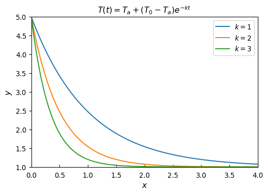
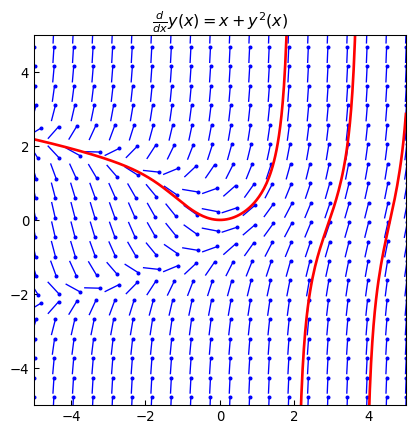
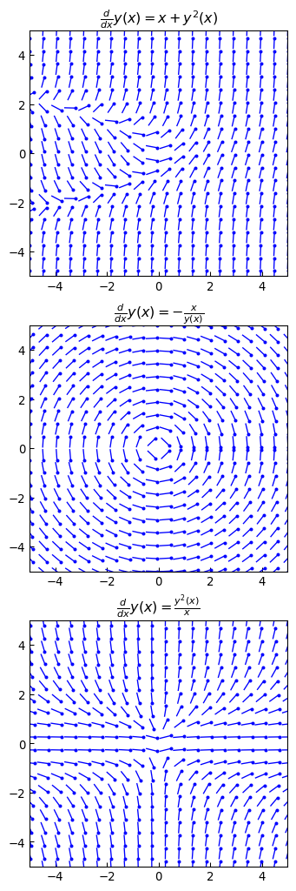
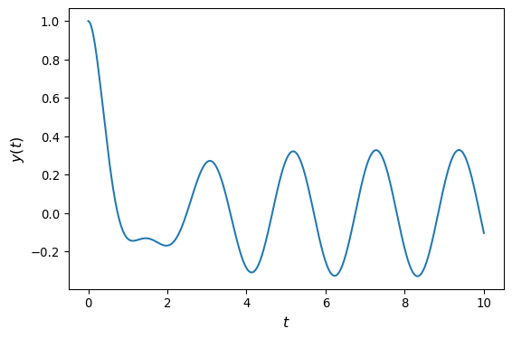
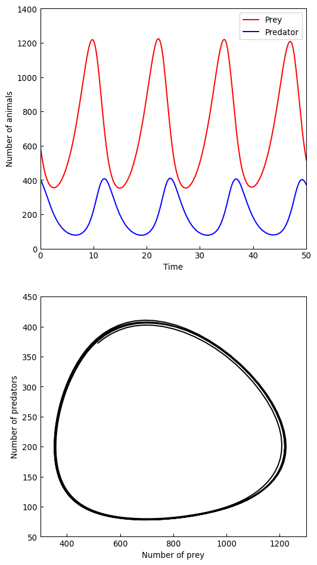

import numpy as np
import sympy
from sympy import pi
sympy.init_printing()
import matplotlib.pyplot as plt
import matplotlib as mpl
from mpl_toolkits.mplot3d.axes3d import Axes3DAppendix H — Ordinary Differential Equations
In this appendix, we will explore both symbolic and numerical approaches to solving ODE problems. For symbolic methods, we use the sympy module, and for numerical integration of ODEs, we use functions from the integrate module in scipy
H.1 Importing modules
H.2 Ordinary differential equations
The simplest form of an ordinary differential equation is
\[ \frac{dy(x)}{dx} = f(x,y(x))\]
where \(y(x)\) is the unknown function and \(f(x, y(x))\) is known. \(\,\)Only the first derivative occurs in the equation, and it is therefore an example of a first-order ODE
More generally, \(~\)we can write an \(n\)-th order ODE in explicit form as
\[ \frac{d^ny}{dx^n} = f\left(x,y,\frac{dy}{dx},\cdots,\frac{d^{n-1}y}{dx^{n-1}}\right)\]
or in implicit form as
\[ F\left(x,y,\frac{dy}{dx},\cdots,\frac{d^{n}y}{dx^{n}}\right)=0\]
where \(f\) and \(F\) are known functions.
The general solution of an \(n\)-th order ODE have \(n\) free parameters that we need to specify, for example, as initial conditions for the unknown function and \(n -1\) of its derivatives
\[y(0)=y_0, y'(0)=y_1, \cdots, y^{n-1}(0)=y_{n-1}\]
An ODE can always be rewritten as a system of first-order ODEs. Specifically, the \(n\)-th order ODE on the explicit form can be written in the standard form by introducing \(n\) new functions
\[y_1 = y,\, y_2=\frac{dy}{dx},\, \cdots,\, y_n = \frac{dy^{n-1}}{dx^{n-1}}\]
This gives the following system of first-order ODEs:
\[\frac{d}{dx} \begin{bmatrix} y_1\\ \vdots\\ y_{n-1}\\ y_n \end{bmatrix} = \begin{bmatrix} y_2\\ \vdots\\ y_n\\ f(x,y_1,\cdots, y_n) \end{bmatrix} \]
which also can be written in a more compact vector form:
\[\frac{d\mathbf{y}}{dx} = \mathbf{f}(x,\mathbf{y}(x))\]
This canonical form is particularly useful for numerical solutions of ODEs, and it is common that numerical methods for solving ODEs take the function \(\mathbf{f} = (f_1, f_2,\cdots,f_n)\)
If the functions \(f_1, f_2, \cdots, f_n\) are all linear, then the corresponding system of ODEs can be written on the simple form
\[ \frac{d\mathbf{y}}{dx} = \mathbf{A}(\mathbf{x})\mathbf{y}(\mathbf{x}) +\mathbf{r}(\mathbf{x}),\]
where \(\mathbf{A}(\mathbf{x})\) is an \(n\times n\) matrix, and \(\mathbf{r}(\mathbf{x})\) is an \(n\)-vector, that only depends on \(\mathbf{x}\). In this form, the \(\mathbf{r}(\mathbf{x})\) is known as the source term, and the linear system is known as homogeneous if \(\mathbf{r}(\mathbf{x})=\mathbf{0}\), and nonhomogeneous otherwise
For certain properties and forms of the function \(\mathbf{f}(\mathbf{x}, \mathbf{y}(\mathbf{x}))\), there may be known solutions and special methods for solving the corresponding ODE problem, but there is no general method for an arbitrary \(\mathbf{f}(\mathbf{x}, \mathbf{y}(\mathbf{x}))\), other than approximate numerical methods
In addition to the properties of \(\mathbf{f}(\mathbf{x}, \mathbf{y}(\mathbf{x}))\), the boundary conditions for an ODE also influence the solvability of the ODE problem, as well as which numerical approaches are available. There are two main types of boundary conditions for ODE problems: initial value conditions and boundary value conditions
H.3 Symbolic solution to ODEs
Sympyprovides a generic ODE solversympy.dsolve, which is able to find analytical solutions to many elementary ODEs. Thesympy.dsolvefunction attempts to automatically classify a given ODE, and it may attempt a variety of techniques to find its solutionWhile
dsolvecan be used to solve many simple ODEs symbolically, as we will see in the following, it is worth keeping in mind that most ODEs cannot be solved analytically. Typical examples of ODEs where one can hope to find a symbolic solution are ODEs of first or second-order, or linear systems of first-order ODEs with only a few unknown functionsThe first example is the simple first-order ODE for Newton’s cooling law,
\[\frac{dT(t)}{dt} = -k(T(t) -T_a)\]
with the initial value \(T(0) = T_0\)
t, k, T0, Ta = sympy.symbols('t, k, T_0, T_a')
T = sympy.Function('T')
ode = T(t).diff(t) +k *(T(t) - Ta)
# display the equation including the equality sign
# and a right-hand side that is zero
sympy.Eq(ode, 0) \(\displaystyle k \left(- T_{a} + T{\left(t \right)}\right) + \frac{d}{d t} T{\left(t \right)} = 0\)
ode_sol = sympy.dsolve(ode)
ode_sol\(\displaystyle T{\left(t \right)} = C_{1} e^{- k t} + T_{a}\)
- The return value from
sympy.dsolveis an instance ofsympy.Eq, which is a symbolic representation of an equality
ode_sol.lhs, ode_sol.rhs\(\displaystyle \left( T{\left(t \right)}, \ C_{1} e^{- k t} + T_{a}\right)\)
Once the general solution has been found, \(\,\)we need to use the initial conditions to find the values of the yet-to-be-determined integration constants
We first create a dictionary that describes the initial condition,
ics = {T(0): T0}, which we can use withsympy’ssubsmethod to apply the initial condition to the solution of the ODE. This results in an equation for the unknown integration constant \(C_1\):
ics = {T(0): T0}
C_eq = sympy.Eq(ode_sol.lhs.subs(t, 0).subs(ics),
ode_sol.rhs.subs(t, 0))
C_eq\(\displaystyle T_{0} = C_{1} + T_{a}\)
- In the present example, the equation for \(C_1\) is trivial to solve, but for the sake of generality, here we solve it using
sympy.solve:
C_sol = sympy.solve(C_eq)
C_sol\(\displaystyle \left[ \left\{ C_{1} : T_{0} - T_{a}\right\}\right]\)
ode_sol.subs(C_sol[0])\(\displaystyle T{\left(t \right)} = T_{a} + \left(T_{0} - T_{a}\right) e^{- k t}\)
- Applying the initial conditions and solving for the undetermined integration constants can be slightly tedious, and it worth while to collect these steps in a reusable function. The following function
apply_icsis a basic implementation that generalizes these steps to a differential equation of arbitrary order
def apply_ics(sol, ics, x, known_params):
"""
Apply the initial conditions (ics),
given as a dictionary on the form
ics = {y(0): y0, y(x).diff(x).subs(x, 0): y1, ...}
to the solution of the ODE with independent variable x
The undetermined integration constants
C1, C2, ...
are extracted from the free symbols of the ODE solution,
excluding symbols in the known_params list
"""
free_params = sol.free_symbols - set(known_params)
eqs = [(sol.lhs.diff(x, n)
- sol.rhs.diff(x, n)).subs(x, 0).subs(ics)
for n in range(len(ics))]
sol_params = sympy.solve(eqs, free_params)
return sol.subs(sol_params)T_sol = apply_ics(ode_sol, ics, t, [k, Ta])
T_sol\(\displaystyle T{\left(t \right)} = T_{a} + \left(T_{0} - T_{a}\right) e^{- k t}\)
x = np.linspace(0, 4, 100)
y = sympy.lambdify((t, k),
T_sol.rhs.subs({T0: 5, Ta: 1}),
'numpy')
fig, ax = plt.subplots(figsize=(6, 4))
for k in [1, 2, 3]:
ax.plot(x, y(x, k), label=rf'$k={k}$')
ax.set_title(rf'${sympy.latex(T_sol)}$', fontsize=12)
ax.set_xlabel(r"$x$", fontsize=12)
ax.set_ylabel(r"$y$", fontsize=12)
ax.legend()
ax.set_xlim(0, 4)
ax.set_ylim(1, 5)
ax.tick_params(which='both', direction='in', axis='x', pad=7)
As an example of a slightly more complicated problem, \(\,\)consider the ODE for a damped harmonic oscillator, which is a second-order ODE on the form
\[ \frac{d^2x(t)}{dt^2} +2\gamma \omega_0 \frac{dx(t)}{dt} +\omega_0^2 x(t) = 0\]
where \(x(t)\) is the position of the oscillator at time \(t\), \(\,\omega_0\) is the frequency for the undamped case, and \(\,\gamma\) is the damping ratio
t, omega0, gamma = sympy.symbols('t, omega_0, gamma',
positive=True)
x = sympy.Function("x")
ode = (x(t).diff(t, 2)
+2 *gamma* omega0 *x(t).diff(t)
+omega0**2 *x(t))
sympy.Eq(ode, 0)\(\displaystyle 2 \gamma \omega_{0} \frac{d}{d t} x{\left(t \right)} + \omega_{0}^{2} x{\left(t \right)} + \frac{d^{2}}{d t^{2}} x{\left(t \right)} = 0\)
ode_sol = sympy.dsolve(ode)
ode_sol\(\displaystyle x{\left(t \right)} = C_{1} e^{\omega_{0} t \left(- \gamma + \sqrt{\gamma - 1} \sqrt{\gamma + 1}\right)} + C_{2} e^{- \omega_{0} t \left(\gamma + \sqrt{\gamma - 1} \sqrt{\gamma + 1}\right)}\)
- Since this is a second-order ODE, there are two undetermined integration constants in the general solution. We need to specify initial conditions for both the position \(x(0)\) and the velocity \(x'(0)\) to single out a particular solution to the ODE
ics = {x(0): 1, x(t).diff(t).subs(t, 0): 0}
x_sol = apply_ics(ode_sol, ics, t, [omega0, gamma])
C1 = x_sol.rhs.args[0].args[0]
C1\(\displaystyle \frac{\gamma}{2 \sqrt{\gamma - 1} \sqrt{\gamma + 1}} + \frac{1}{2}\)
C2 = x_sol.rhs.args[1].args[0]
C2\(\displaystyle - \frac{\gamma}{2 \sqrt{\gamma - 1} \sqrt{\gamma + 1}} + \frac{1}{2}\)
- This is the solution for the dynamics of the oscillator for arbitrary values of \(t\), \(\omega_0\) and \(\gamma\). \(~\)However, substituting \(\gamma = 1\), \(\,\)which corresponds to critical damping, directly into this expression results in a division by zero error, and for this particular choice of \(\gamma\), we need to be careful and compute the limit where \(\gamma \rightarrow 1\)
x_critical = sympy.limit(x_sol.rhs, gamma, 1)
x_critical\(\displaystyle \left(\omega_{0} t + 1\right) e^{- \omega_{0} t}\)
- Finally, \(\,\)we plot the solutions for \(\omega_0 = 2\pi\) and a sequence of different values of the damping ratio \(\gamma\)
fig, ax = plt.subplots(figsize=(6, 4))
tt = np.linspace(0, 3, 250)
for g in [0.1, 0.5, 1, 2.0, 5.0]:
if g == 1:
x_t = sympy.lambdify(t,
x_critical.subs({omega0: 2.0 *pi}), 'numpy')
else:
x_t = sympy.lambdify(t,
x_sol.rhs.subs({omega0: 2.0 *pi, gamma: g}), 'numpy')
ax.plot(tt, x_t(tt).real, label=rf'$\gamma = {g: .1f}$')
ax.set_xlabel(r"$t$", fontsize=12)
ax.set_ylabel(r"$x(t)$", fontsize=12)
ax.legend()
ax.set_xlim(0, 3)
ax.set_ylim(-1, 1.5)
ax.tick_params(which='both', direction='in', axis='x', pad=7)- Even many first-order ODEs cannot be solved exactly in terms of elementary functions. For example, consider \(\displaystyle\frac{dy}{dx} = x +y^2\), \(\,\)which is an example of an ODE that does not have any closed-form solution
x = sympy.symbols('x', positive=True)
y = sympy.Function('y')
u = sympy.Function('u')
f = y(x)**2 +x
ode = y(x).diff(x) -f
ode\(\displaystyle - x - y^{2}{\left(x \right)} + \frac{d}{d x} y{\left(x \right)}\)
sympy.classify_ode(ode)('1st_rational_riccati', '1st_power_series', 'lie_group')- See Section 2.5
# sympy bug: '1st_rational_riccati' not working
q0 = x
q1 = sympy.Integer('0')
q2 = sympy.Integer('1')
S = q2 *q0
R = q1 +q2.diff(x) /q2
ode_ = u(x).diff(x, 2) -R *u(x).diff(x) +S *u(x)
u_sol = sympy.dsolve(ode_).rhs
u_sol\(\displaystyle C_{1} Ai\left(- x\right) + C_{2} Bi\left(- x\right)\)
y_sol = -u_sol.diff(x) /(q2 *u_sol)
y_sol\(\displaystyle \frac{C_{1} Ai^\prime\left(- x\right) + C_{2} Bi^\prime\left(- x\right)}{C_{1} Ai\left(- x\right) + C_{2} Bi\left(- x\right)}\)
C1 = sympy.Symbol('C1')
C1_ = sympy.solve(y_sol.subs({x: 0}), C1)[0]
C1_\(\displaystyle \sqrt{3} C_{2}\)
y_sol = y_sol.subs({C1: C1_}).cancel()
y_sol\(\displaystyle \frac{\sqrt{3} Ai^\prime\left(- x\right) + Bi^\prime\left(- x\right)}{\sqrt{3} Ai\left(- x\right) + Bi\left(- x\right)}\)
For many other types of equations,
sympyoutright fails to produce any solution at all. \(\,\)For example, if we attempt to solve the second-order\[\frac{d^2y}{dx^2} =x +y^2\]
sympy.Eq(y(x).diff(x, 2), f)\(\displaystyle \frac{d^{2}}{d x^{2}} y{\left(x \right)} = x + y^{2}{\left(x \right)}\)
try:
sympy.dsolve(y(x).diff(x, 2) -f)
except Exception as e:
print(e)solve: Cannot solve -x - y(x)**2 + Derivative(y(x), (x, 2))H.3.1 Direction fields
A direction field graph is a simple but useful technique to visualize possible solutions to arbitrary first-order ODEs. It is made up of short lines that show the slope of the unknown function on a grid in the \(x\)–\(y\) plane. This graph can be easily produced because the slope of \(y(x)\) at arbitrary points of the \(x\)–\(y\) plane is given by the definition of the ODE:
\[\frac{dy}{dx}=f(x,y(x))\]
The reason why the direction field graph is useful is that smooth and continuous curves that tangent the slope lines (at every point) in the direction field graph are possible solutions to the ODE
def plot_direction_field(x, y_x, f_xy,
x_lim=(-5, 5), y_lim=(-5, 5), ax=None):
f_np = sympy.lambdify((x, y_x), f_xy, 'numpy')
x_vec = np.linspace(x_lim[0], x_lim[1], 20)
y_vec = np.linspace(y_lim[0], y_lim[1], 20)
if ax is None:
_, ax = plt.subplots(figsize=(4, 4))
dx = x_vec[1] -x_vec[0]
dy = y_vec[1] -y_vec[0]
scale = 0.8 *dx
for m, x_ in enumerate(x_vec):
for n, y_ in enumerate(y_vec):
Dy = f_np(x_, y_) *dx
Dx = scale *dx /np.sqrt(dx**2 +Dy**2)
Dy = scale *Dy /np.sqrt(dx**2 +Dy**2)
ax.plot([x_ -Dx/2, x_ +Dx/2],
[y_ -Dy/2, y_ +Dy/2], 'b', lw=1)
ax.plot(x_ +Dx/2, y_ +Dy/2, 'bo', ms=2)
ax.set_xlim(x_lim[0], x_lim[1])
ax.set_ylim(y_lim[0], y_lim[1])
ax.tick_params(which='both', direction='in')
title_ = sympy.latex(sympy.Eq(y(x).diff(x), f_xy))
ax.set_title(rf'${title_}$', fontsize=12)
return ax- With this function, we can produce the direction field graphs for the ODEs. The direction lines in the graphs suggest how the curves that are solutions to the corresponding ODE behave, and direction field graphs are therefore a useful tool for visualizing solutions to ODEs that cannot be solved analytically
x = sympy.symbols('x')
y = sympy.Function('y')
f = y(x)**2 +xfig, ax = plt.subplots(1, 1, figsize=(5, 5))
# left panel
plot_direction_field(x, y(x), f, ax=ax)
x_vec = np.linspace(-5, 5, 300)
y_vec = sympy.lambdify(x, y_sol)(x_vec)
threshold = 20
y_vec[y_vec > threshold] = np.inf
y_vec[y_vec <-threshold] = np.inf
ax.plot(x_vec, y_vec, 'r', lw=2) 
The following code generates the direction field graphs for
\(f(x,y(x))=y^2(x) +x\)
\(f(x,y(x))=-x/y(x)\)
\(f(x,y(x))=y^2(x)/x\)
x = sympy.symbols('x')
y = sympy.Function('y')
fig, axes = plt.subplots(3, 1, figsize=(4, 13))
plot_direction_field(x, y(x), y(x)**2 +x, ax=axes[0])
plot_direction_field(x, y(x), -x /y(x), ax=axes[1])
plot_direction_field(x, y(x), y(x)**2 /x, ax=axes[2])
H.3.2 Solving ODEs using Laplace Transformation
A technique that can be used to solve certain ODE problems is to do Laplace transform on the ODE, which for many problems results in an algebraic equation that is easier to solve. The solution to the algebraic equation can then be transformed back to the original domain with an inverse Laplace transform, to obtain the solution to the original problem. For example, consider the following differential equation for a driven harmonic oscillator:
\[ \frac{d^2 y}{dt^2} +2\frac{dy}{dt} +10y =2\sin 3t\]
_laplace_trabsform_expansion.py
laplace_tranform_()is the expanded version oflaplace_transform()subs_()is the modified function ofsub()method
t = sympy.symbols("t", positive=True)
y = sympy.Function("y")
ode = (y(t).diff(t, 2)
+2 *y(t).diff(t)
+10 *y(t)
-2 *sympy.sin(3*t))
ics = {y(0): 1, y(t).diff(t).subs(t, 0): 0}
ode\(\displaystyle 10 y{\left(t \right)} - 2 \sin{\left(3 t \right)} + 2 \frac{d}{d t} y{\left(t \right)} + \frac{d^{2}}{d t^{2}} y{\left(t \right)}\)
s = sympy.symbols('s', real=True)
Y = sympy.Function('Y')
Ly = laplace_transform_(y(t), t, s)Lode = subs_(laplace_transform_(ode, t, s), Ly, Y(s)).subs(ics)
Lode\(\displaystyle s^{2} Y{\left(s \right)} + 2 s Y{\left(s \right)} - s + 10 Y{\left(s \right)} - 2 - \frac{6}{s^{2} + 9}\)
Y_sol = sympy.solve(Lode, Y(s))[0]
Y_sol \(\displaystyle \frac{s^{3} + 2 s^{2} + 9 s + 24}{s^{4} + 2 s^{3} + 19 s^{2} + 18 s + 90}\)
y_sol = sympy.inverse_laplace_transform(Y_sol, s, t)
y_sol\(\displaystyle \frac{2 \sin{\left(3 t \right)}}{37} - \frac{12 \cos{\left(3 t \right)}}{37} + \frac{43 e^{- t} \sin{\left(3 t \right)}}{111} + \frac{49 e^{- t} \cos{\left(3 t \right)}}{37}\)
y_t = sympy.lambdify(t, y_sol, modules=['numpy'])fig, ax = plt.subplots(figsize=(6, 4))
tt = np.linspace(0, 10, 500)
ax.plot(tt, y_t(tt))
ax.set_xlabel(r"$t$", fontsize=12)
ax.set_ylabel(r"$y(t)$", fontsize=12)
fig.tight_layout()
H.4 Numerical methods for solving ODEs
In practice, ODE problems are therefore mainly solved with numerical methods. There are many approaches to solving ODEs numerically, and most of them are designed for problems that are formulated as a system of first-order ODEs on the standard form:
\[ \frac{d\mathbf{y}}{dx} = \mathbf{f}(x, \mathbf{y}(x))\]
The basic idea of many numerical methods for ODEs is captured in Euler’s method. This method can, for example, be derived from a Taylor-series expansion of \(y(x)\) around the point \(x\):
\[ y(x+h) = y(x) +\frac{dy(x)}{dx}h +\frac{d^2 y(x)}{dx^2} h^2 + \cdots, \]
where for notational simplicity we consider the case when \(y(x)\) is a scalar function
By dropping terms of second order or higher, \(\,\)we get the approximate equation
\[ y(x+h) \approx y(x) +\frac{dy(x)}{dx}h, \]
which is accurate to first order in the step size \(h\). This equation can be turned into an iteration formula by discretizing the \(x\) variable, \(x_0\), \(x_1\), \(\cdots\), \(x_k\), \(\,\)choosing the step size \(h_k =x_{k+1} -x_{k}\), \(\,\)and denoting \(y_k = y(x_k)\). \(\,\)The resulting iteration formula:
\[\color{red}{y_{k+1} \approx y_{k} +f(x_k, y_k) h_k},\]
is known as the forward Euler method, and it is said to be an explicit form because given the value of the \(y_k\), we can directly compute \(y_{k+1}\) using the formula
There are two types of errors involved in this approach: First, the truncation of the Taylor series gives error that limits the accuracy of the method. Second, using the approximation of \(y_k\) given by the previous iteration when computing \(y_{k+1}\) gives an additional error that may accumulate over successive iterations, and that can affect the stability of the method
An alternative form, which can be derived in a similar manner, is the backward Euler method, \(\,\)given by the iteration formula
\[\color{red}{y_{k+1} \approx y_{k} +f(x_{k+1}, y_{k+1}) h_k}\]
This is an example of a backward differentiation formula(BDF), which is implicit, \(\,\)because \(y_{k+1}\) occurs on both sides of the equation. \(~\)To compute \(y_{k+1}\), \(\text{ }\)we therefore need to solve an algebraic equation (for example using Newton’s method)
Implicit methods are more complicated to implement than explicit methods, and each iteration requires more computational work. However, the advantage is that implicit methods generally have larger stability region and better accuracy, which means that larger step size \(h_k\) can be used while still obtaining an accurate and stable solution
Implicit methods are often particularly useful for stiff problems, which loosely speaking are ODE problems that describe dynamics with multiple disparate time scales
There are several methods to improve upon the first-order Euler forward and backward methods. One strategy is to keep higher-order terms in the Taylor-series expansion of \(y(x + h)\). \(\,\)However, such methods require evaluating higher-order derivatives of \(y(x)\), which may be a problem
Ways around this problem include to approximate the higher-order derivatives using finite-difference approximations of the derivatives, or by sampling the function \(f(x, y(x))\) at intermediary points in the interval \([x_k, x_{k+1}]\)
An example of this type of method is the well-known Runge-Kutta method, which is a single-step method that uses additional evaluations of \(f(x, y(x))\). The most well-known Runge-Kutta method is the 4th-order scheme:
\[\color{red}{y_{k+1} = y_k +\frac{h_k}{6} (k_1 +2k_2 +2k_3 +k_4)}\]
where
\[ \begin{aligned} k_1 &= f(t_k, \,y_k)\\ k_2 &= f\left(t_k + \frac{h_k}{2},\, y_k +h_k \frac{k_1}{2} \right)\\ k_3 &= f\left(t_k + \frac{h_k}{2},\, y_k +h_k \frac{k_2}{2} \right)\\ k_4 &= f(t_k +h_k, \,y_k +h_k k_3) \end{aligned} \]
Here, \(k_1\) to \(k_4\) are four different evaluations of the ODE function \(f(x, y(x))\) that are used in the explicit formula for \(y_{k+1}\) given above. The resulting estimate of \(y_{k+1}\) is accurate to 4-th order, with an error of 5-th order.
Higher-order schemes that use more function evaluations can also be constructed. By combining two methods of different order, it can be possible to also estimate the error in the approximation.
A popular combination is the Runge-Kutta 4-th and 5-th order schemes, which results in a 4-th order accurate method with error estimates. It is known as RK45 or the Runge-Kutta-Fehlberg method. The Dormand-Prince method is another example of a higher-order method, which additionally uses adaptive step size control. For example, the 8-5-3 method combines 3rd and 5-th order schemes to produce an 8-th order method
An alternative method is to use more than one previous value of \(y_k\) to compute \(y_{k+1}\). Such methods are known as multistep methods, and can in general be written on the form
\[\color{red}{y_{k + s} = \sum_{n=0}^{s-1} a_n y_{k + n} + h \sum_{n=0}^{s} b_n f(x_{k + n}, y_{k + n})}\]
This formula means that to compute \(y_{k+s}\), the previous \(s\) values of \(y_k\) and \(f(x_k, y_k)\) are used (known as an \(s\)-step method). The choices of the coefficients \(a_n\) and \(b_n\) give rise to different multistep methods. Note that if \(b_s = 0\), then the method is explicit, and if \(b_s \neq 0\) it is implicit
For example, \(b_0 = b_1 = \cdots = b_{s-1} = 0\) gives the general formula for an \(s\)-step BDF formula, where \(a_n\) and \(b_s\) are chosen to maximize the order of the accuracy. For example, the one-step BDF method with \(b_1 = a_0 = 1\) reduces to the backward Euler method, and the two-step BDF method,
\[y_{k+2} = a_0 y_k +a_1 y_{k+1} +hb_2 f(x_{k+2}, y_{k+2})\]
when solved for the coefficients \((a_0, a_1, b_2)\) becomes \((-\frac{1}{3},\,\frac{4}{3},\,\frac{2}{3})\)
Another family of multistep methods are the Adams methods, which result from the choice
\[\color{red}{a_0 = a_1 = \cdots = a_{s-2} = 0, \text{ and } a_{s-1}=1}\]
where again the remaining unknown coefficients are chosen to maximize the order of the method
Specifically, the explicit method with \(b_s = 0\) are known as Adams-Bashforth methods, and the implicit methods with \(b_s \neq 0\) are known as Adams-Moulton methods. For example, the one-step Adams-Bashforth and Adams-Moulton methods reduce to the forward and backward Euler methods, respectively
And the two-step methods are
\[y_{k+2} = y_{k+1} + h \left[ -\frac{1}{2} f(x_{k}, y_{k}) + \frac{3}{2} f(x_{k+1}, y_{k+1}) \right]\]
and
\[y_{k+1} = y_{k} + \frac{h}{2} \left[ f(x_{k}, y_{k}) + f(x_{k+1}, y_{k+1}) \right]\]
In general, explicit methods are more convenient to implement and less computationally demanding to iterate than implicit methods, which in principle requires solving (a potentially nonlinear) equation in each iteration with an initial guess for the unknown \(y_{k+1}\)
However, as mentioned earlier, implicit methods often are more accurate and have superior stability properties. A compromise that retain some of the advantages of both methods is to combine explicit and implicit methods in the following way:
First compute \(y_{k+1}\) using an explicit method,
then use this \(y_{k+1}\) as an initial guess for solving the equation for \(y_{k+1}\) given by an implicit method.
This equation does not need to be solved exactly, and since the initial guess from the explicit method should be quite good, a fixed number of iterations, using for example Newton’s method, could be sufficient. Methods like these, where an explicit method is used to predict \(y_{k+1}\) and an implicit method is used to correct the prediction, are called predictor-corrector methods
H.5 Numerical integration of ODEs using scipy
The
integratemodule ofscipyprovides the ODE solver interface:integrate.solve_ivp. This function numerically integrates a system of ordinary differential equations given an initial value:\[\begin{aligned} \frac{d\mathbf{y}}{dt}&= \mathbf{f}(t, \mathbf{y})\\ \mathbf{y}(t_0)&= \mathbf{y}_0 \end{aligned}\]
Explicit Runge-Kutta methods
('RK23','RK45','DOP853')should be used for non-stiff problems and implicit methods('Radau','BDF')for stiff problems. Among Runge-Kutta methods,'DOP853'is recommended for solving with high precision (low values ofrtolandatol)If not sure, first try to run
'RK45'. If it makes unusually many iterations, diverges, or fails, your problem is likely to be stiff and you should use'Radau'or'BDF'.'LSODA'can also be a good universal choice, but it might be somewhat less convenient to work with as it wraps old Fortran codeFor example, \(\,\)consider again the scalar ODE
\[y'(x) = f(x, y(x)) = x + y^2(x)\]
from scipy import integrate
def dydx(x, y):
return x +y*y
y0 = [0]
sol_p = integrate.solve_ivp(dydx, [0, 1.9], y0)
sol_m = integrate.solve_ivp(dydx, [0, -5], y0)fig, ax = plt.subplots(1, 1, figsize=(6, 6))
plot_direction_field(x, y(x), f, ax=ax)
ax.plot(sol_p.t, sol_p.y.T, 'g', lw=2)
ax.plot(sol_m.t, sol_m.y.T, 'r', lw=2)In the previous example, we solved a scalar ODE problem. More often we are interested in vector-valued ODE problems (systems of ODEs). To see how we can solve that kind of problems using
solve_ivp, consider the Lokta-Volterra equations for the dynamics of a population of predator and prey animals (a classic example of coupled ODEs). The equations are\[ x'(t) = a x - b x y \]
\[ y'(t) = c x y - d y \]
where \(x(t)\) is the number of prey animals and \(y(t)\) is the number of predator animals, and the coefficients \(a\), \(b\), \(c\), and \(d\) describe the rates of the processes in the model
a, b, c, d = 0.4, 0.002, 0.001, 0.7
def f(t, xy):
x, y = xy
return [a *x -b *x *y, c *x *y -d *y]xy0 = [600, 400]
sol = integrate.solve_ivp(f, [0, 50], xy0,
t_eval=np.linspace(0, 50, 400))
t = sol.t
xy_t = sol.y.Tfig, axes = plt.subplots(2, 1, figsize=(6, 12))
axes[0].plot(t, xy_t[:,0], 'r', label="Prey")
axes[0].plot(t, xy_t[:,1], 'b', label="Predator")
axes[0].set_xlabel("Time")
axes[0].set_ylabel("Number of animals")
axes[0].legend()
axes[0].set_xlim(0, 50)
axes[0].set_ylim(0, 1400)
axes[0].tick_params(which='both', direction='in')
axes[1].plot(xy_t[:,0], xy_t[:,1], 'k')
axes[1].set_xlabel("Number of prey")
axes[1].set_ylabel("Number of predators")
axes[1].set_xlim(300, 1300)
axes[1].set_ylim(50, 450)
axes[1].tick_params(which='both', direction='in')
In the previous two examples, the function for the right-hand side of the ODE was implemented without additional arguments. Rather than using global variables, it is often convenient and elegant to implement the
ffunction in such a way that it takes arguments for all its coefficient or parameters. To illustrate this point, let’s consider another famous ODE problem: the Lorenz equations, which is the following system of three coupled nonlinear ODEs,\[ \begin{aligned} x'(t) &= \sigma(y - x)\\ y'(t) &= x(\rho - z) - y \\ z'(t) &= x y - \beta z \end{aligned} \]
rho, sigma, beta = 28, 8, 8/3.0
def f(t, xyz, rho, sigma, beta):
x, y, z = xyz
return [sigma *(y -x), x *(rho -z) -y, x *y -beta *z]xyz0 = [1.0, 1.0, 1.0]
t_span = [0, 25]
t_eval = np.linspace(0, 25, 10000)
sol1 = integrate.solve_ivp(f, t_span, xyz0,
t_eval=t_eval, args=(rho, sigma, beta))
sol2 = integrate.solve_ivp(f, t_span, xyz0,
t_eval=t_eval, args=(rho, sigma, 0.6*beta))
sol3 = integrate.solve_ivp(f, t_span, xyz0,
t_eval=t_eval, args=(rho, 2*sigma, 0.6*beta))fig, (ax1, ax2, ax3) = plt.subplots(3, 1, figsize=(7, 15),
subplot_kw={'projection': '3d'})
xyz1 = sol1.y
xyz2 = sol2.y
xyz3 = sol3.y
for ax, xyz, c in [(ax1, xyz1, 'r'),
(ax2, xyz2, 'b'),
(ax3, xyz3, 'g')]:
ax.plot(xyz[0,:], xyz[1,:], xyz[2,:], c, alpha=0.5)
ax.set_xlabel('$x$', fontsize=12)
ax.set_ylabel('$y$', fontsize=12)
ax.set_zlabel('$z$', fontsize=12)
ax.set_xticks([-15, 0, 15])
ax.set_yticks([-20, 0, 20])
ax.set_zticks([0, 20, 40])To illustrate how to use the
integrate.odeinterface, \(\,\)we first look at the following sets of coupled second-order ODEs:\[ \begin{aligned} m_1 x_1''(t) + \gamma_1 x_1'(t) + k_1 x_1(t) - k_2 (x_2(t) - x_1(t)) &= 0\\ m_2 x_2''(t) + \gamma_2 x_2'(t) + k_2 (x_2(t) - x_1(t)) &= 0 \end{aligned} \]
These equations describe the dynamics of two coupled springs, where \(x_1(t)\) and \(x_2(t)\) are the displacement of two objects, with masses \(m_1\) and \(m_2\), from their equilibrium positions. The object at \(x_1\) is connected to a fixed wall via a spring with spring constant \(k_1\), and connected to the object at \(x_2\) via a spring with spring constant \(k_2\). Both objects are subject to damping forces characterized by \(\gamma_1\) and \(\gamma_2\), respectively
To solve this kind of problem with
scipy, we first have to write it in standard form, which we can do by introducing \(y_0(t) =x_1(t)\), \(\,y_1(t) =x_1'(t)\), \(\,y_2(t) =x_2(t)\), \(\,\)and \(\,y_3(t) =x_2'(t)\), which results in four coupled first-order equations:\[ \frac{d}{dt} \begin{bmatrix} y_0(t)\\ y_1(t)\\ y_2(t)\\ y_3(t) \end{bmatrix} = \begin{bmatrix} y_1(t) \\ \left[-\gamma_1 y_1(t) -k_1 y_0(t) -k_2 y_0(t) +k_2 y_2(t)\right]/m_1 \\ y_3(t) \\ \left[-\gamma_2 y_3(t) -k_2 y_2(t) +k_2 y_0(t)\right]/m_2 \end{bmatrix} \]
def f(t, y, args):
m1, k1, g1, m2, k2, g2 = args
return [y[1],
- k1/m1 *y[0] +k2/m1 *(y[2] -y[0]) -g1/m1 *y[1],
y[3],
- k2/m2 *(y[2] -y[0]) -g2/m2 *y[3]]m1, k1, g1, m2, k2, g2 = 1.0, 10.0, 0.5, 2.0, 40.0, 0.25
args = (m1, k1, g1, m2, k2, g2)
y0 = [1.0, 0, 0.5, 0]
t = np.linspace(0, 20, 1000)- Instead of calling the
solve_ivpfunction, \(\,\)we now need to create an instance of the classintegrate.ode, \(\,\)passing the ODE function \(f\) as an argument:
r = integrate.ode(f)# the possible first argument:
# vode, zvode, lsoda, dopri5 and dop853
r.set_integrator('lsoda')
r.set_initial_value(y0, t[0])
r.set_f_params(args)
dt = t[1] -t[0]
y = np.zeros((len(t), len(y0)))
idx = 0
while r.successful() and r.t < t[-1]:
y[idx, :] = r.y
r.integrate(r.t +dt)
idx += 1- This is arguably not as convenient as simply calling the
solive_ivp, but it offers extra flexibility that sometimes is exactly what is needed
fig = plt.figure(figsize=(5, 10))
ax1 = plt.subplot2grid((10, 4), (0, 0), colspan=4, rowspan=3)
ax2 = plt.subplot2grid((10, 4), (3, 0), colspan=4, rowspan=3)
ax3 = plt.subplot2grid((10, 4), (6, 0), colspan=4, rowspan=4)
# x_1 vs time plot
ax1.plot(t, y[:, 0], 'r')
ax1.set_ylabel('$x_1$', fontsize=12)
ax1.set_yticks([-1, -.5, 0, .5, 1])
ax1.set_xlim(0, 20)
ax1.set_ylim(-1.0, 1.0)
ax1.tick_params(which='both', direction='in', axis='x', pad=7)
# x2 vs time plot
ax2.plot(t, y[:, 2], 'b')
ax2.set_xlabel('$t$', fontsize=12)
ax2.set_ylabel('$x_2$', fontsize=12)
ax2.set_yticks([-1, -.5, 0, .5, 1])
ax2.set_xlim(0, 20)
ax2.set_ylim(-1.0, 1.0)
ax2.tick_params(which='both', direction='in', axis='x', pad=7)
# x1 and x2 phase space plot
ax3.plot(y[:, 0], y[:, 2], 'g')
ax3.set_xlabel('$x_1$', fontsize=12)
ax3.set_ylabel('$x_2$', fontsize=12)
ax3.set_xticks([-1, -.5, 0, .5, 1])
ax3.set_yticks([-1, -.5, 0, .5, 1])
ax3.set_xlim(-1.0, 1.00)
ax3.set_ylim(-1.0, 1.0)
ax3.tick_params(which='both', direction='in', axis='x', pad=7)
fig.tight_layout()- Python functions for both \(f(t, y(t))\) and its Jacobian can conveniently be generated using
sympy’slambdify, provided that the ODE problem first can be defined as asympyexpression. This symbolic-numeric hybrid approach is a powerful method to solving ODE problems(See Appendix I)